Electric Vehicle Body CFD Optimization
CFD-driven vehicle body optimization focused on reducing drag through rear-body streamlining and wake control.
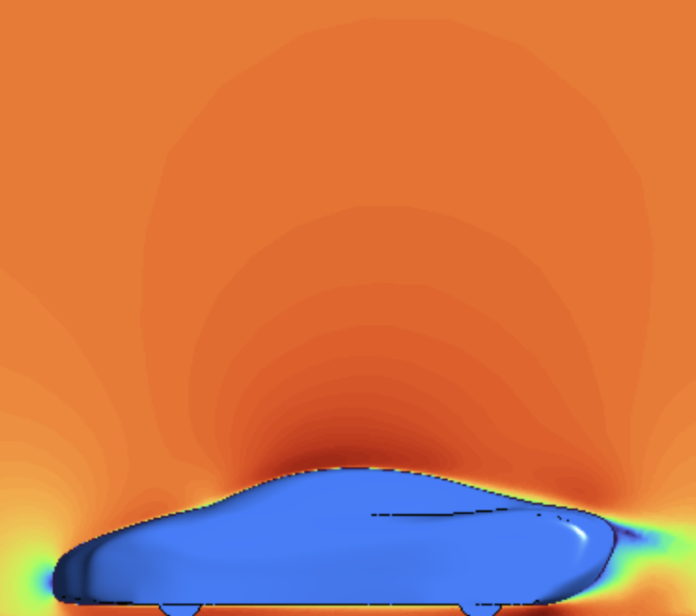
Objective
Design and evaluate an electric vehicle body using computational fluid dynamics (CFD) to reduce aerodynamic drag while maintaining practical geometric constraints. This project focuses on understanding how body shape, rear taper, and wake behavior influence flow separation, pressure drag, and overall aerodynamic efficiency.
Introduction
As the automotive industry transitions toward electric vehicles, aerodynamic efficiency becomes increasingly important for maximizing vehicle range and reducing energy consumption. Unlike combustion-engine vehicles, electric vehicles offer greater flexibility in body design due to the removal of components such as radiators, exhaust systems, and large engine packaging constraints. This creates opportunities to optimize vehicle geometry specifically for aerodynamic performance.
This project explored how external body geometry influences airflow behavior around a simplified electric vehicle body. The primary goal was to reduce aerodynamic drag by minimizing flow separation and reducing the low-pressure wake region behind the vehicle while remaining within prescribed dimensional constraints. Rather than pursuing a fully idealized aerodynamic form, the study focused on iterative refinement of a provided, realistic vehicle geometry using CFD-based design exploration and CAD software.
Mathematical Model and Numerical Solution Strategy
The airflow simulation was governed by the incompressible Navier-Stokes equations, which describe conservation of mass and momentum in fluid flow. The model assumed steady-state, incompressible flow with symmetry across the vehicle centerline in order to reduce computational expenses while preserving the dominant flow behavior. Boundary conditions included a velocity inlet corresponding to a freestream velocity of 27 m/s, a pressure outlet at atmospheric pressure, a moving ground plane at 27 m/s, and no-slip wall conditions along the vehicle surface.
Simulations were performed in ANSYS Fluent using the k-ω GEKO turbulence model, which is suited for complex separated flows and external aerodynamic analysis. A tetrahedral mesh with refined near-wall inflation layers was generated to better resolve the boundary layer around the car body. Appropriate Y+ values were estimated to improve near-wall turbulence modeling and boundary layer accuracy. Residuals, drag coefficient monitors, and lift coefficient monitors were tracked over approximately 200 iterations to assess convergence and solution stability.
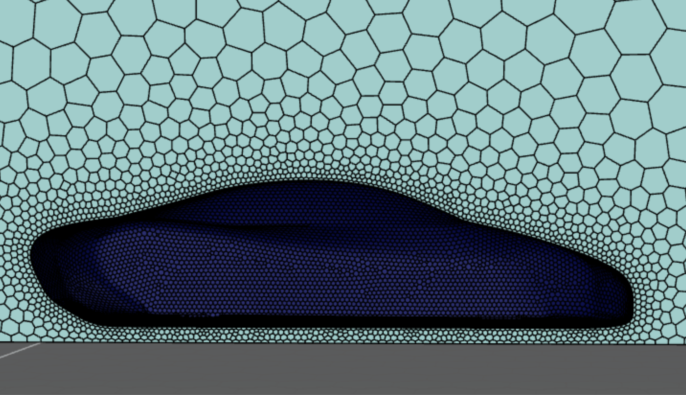
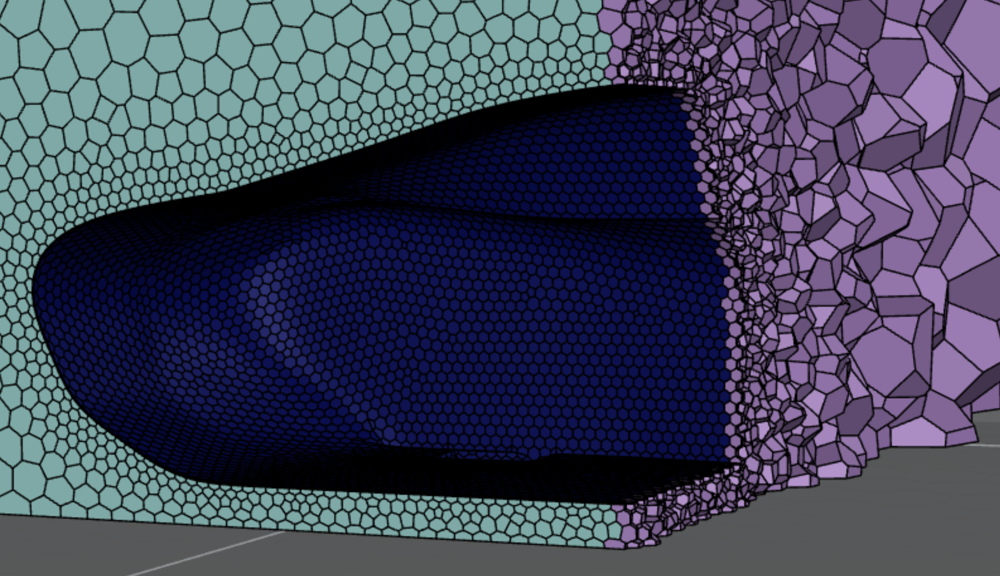
Initial Design and Results
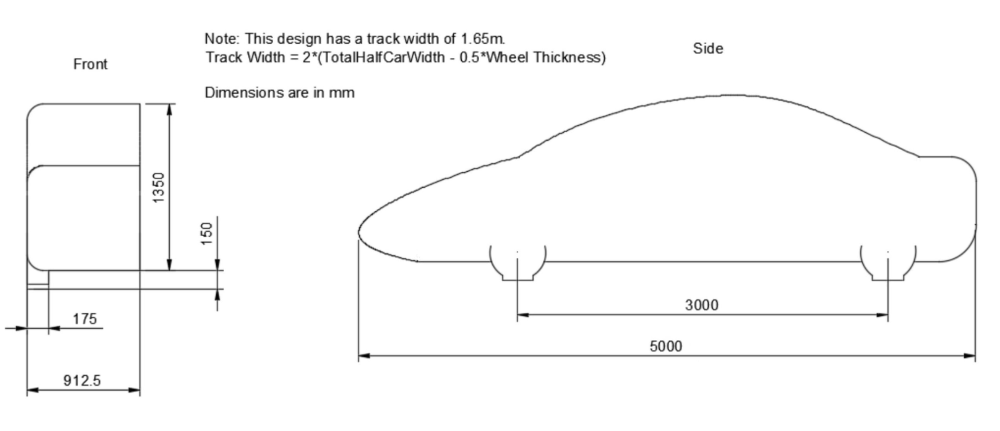
The initial design served as the aerodynamic baseline for evaluating how modifications to the rear geometry would influence wake formation and drag behavior. Velocity and pressure contour plots revealed a substantial wake region behind the vehicle caused by rear flow separation. This low-pressure wake significantly contributed to pressure drag and became the primary target for aerodynamic improvement.
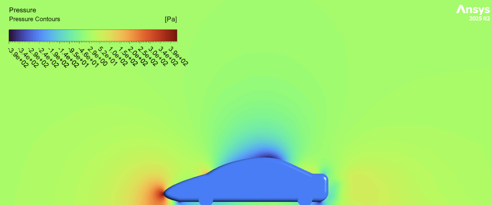
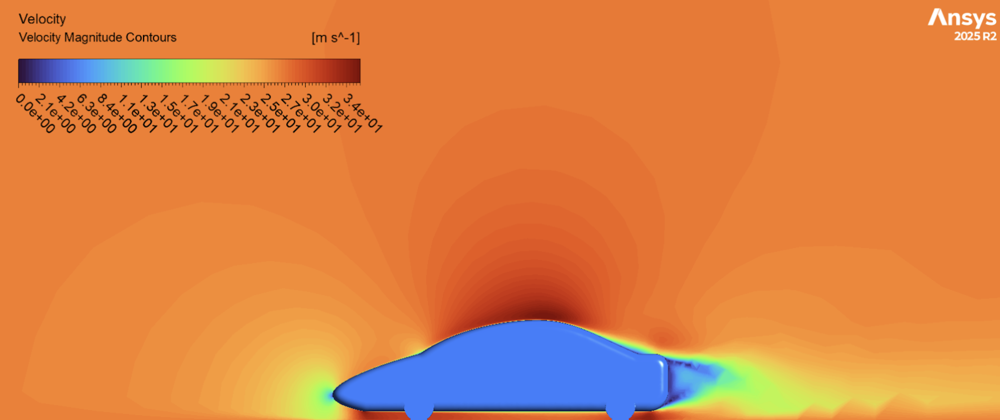
After approximately 200 iterations, the initial design converged to a drag coefficient of CD = 0.32 and a lift coefficient of CL = 0.27. The results indicated that the rear geometry generated noticeable aerodynamic losses due to wake formation and turbulent recirculation behind the vehicle. Although lift coefficient was not the primary focus of the study, the moderate upward lift force also suggested room for improvement in overall aerodynamic stability.
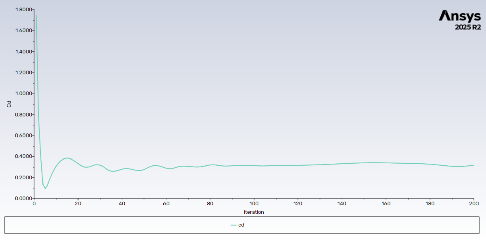
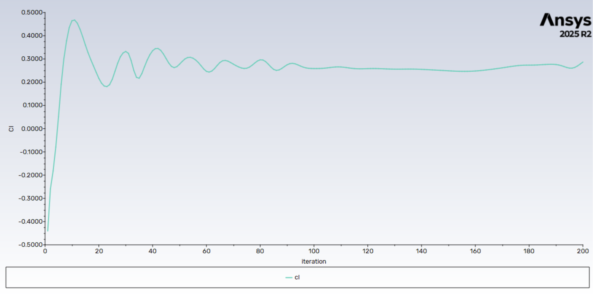
Design Iteration and Refined Results
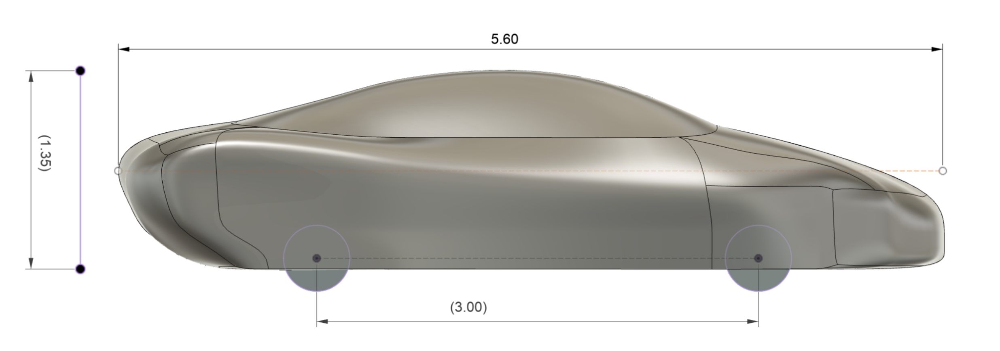
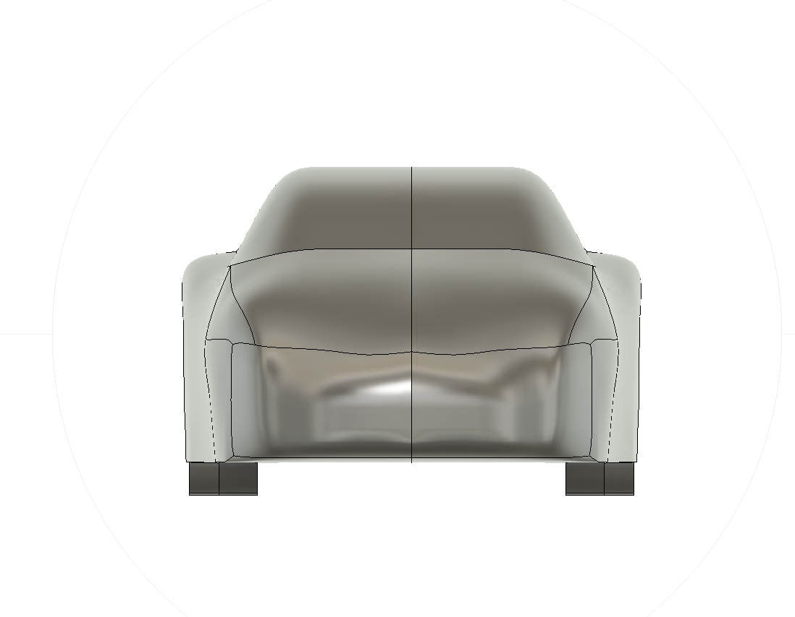
Based on the results of the initial design, the vehicle geometry was modified to create a longer and more streamlined body with a smoother rear taper. Vehicle length increased from 5.0 m to 5.6 m while maintaining the prescribed design constraints. The primary goal of the redesign was to delay flow separation and reduce the size and intensity of the rear wake region.
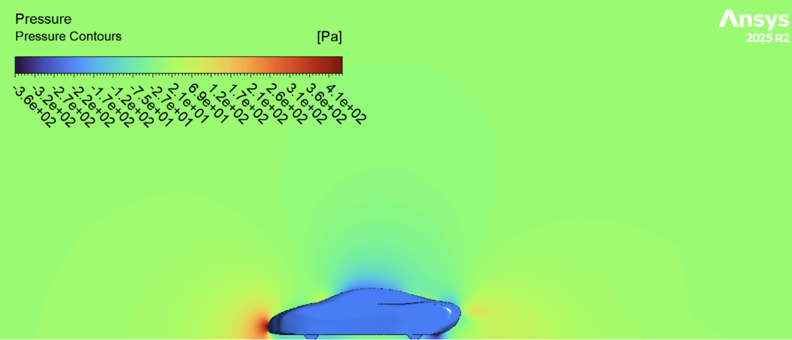
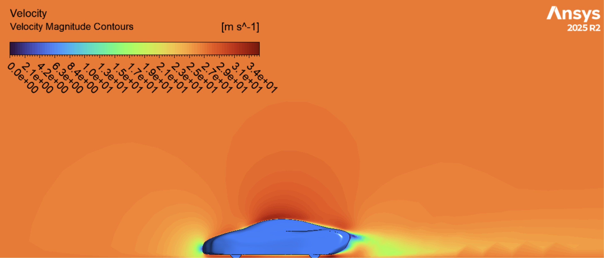
The refined design followed the same CFD workflow, turbulence model, and numerical solution strategy as the original geometry. Updated velocity and pressure contours showed a smaller and less intense wake region behind the vehicle, indicating improved rear flow attachment and pressure recovery. Convergence behavior also improved slightly in the drag and lift monitors.
The refined geometry reduced drag coefficient from CD = 0.32 to CD = 0.29, representing an approximate 9% reduction in aerodynamic drag. Lift coefficient also decreased slightly from CL = 0.27 to CL = 0.26. Although the reduction was smaller than initially expected, the results confirmed that smoother rear-body transitions and a more gradual taper can reduce wake intensity and improve aerodynamic efficiency.
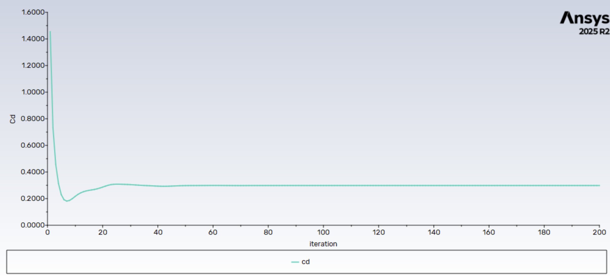
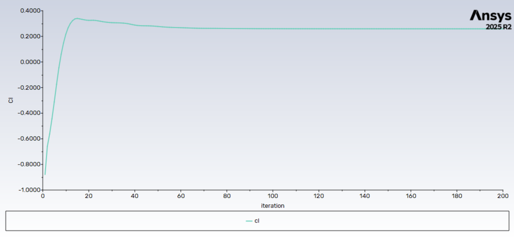
Conclusion, Limitations, and Next Steps
This project demonstrated how CFD can be used as an engineering design tool to evaluate aerodynamic trends and guide iterative vehicle development. The refined geometry successfully reduced aerodynamic drag by decreasing rear wake intensity and improving flow attachment, confirming the importance of pressure drag and wake behavior in automotive aerodynamics. Even relatively small reductions in drag are meaningful for electric vehicles because they directly improve efficiency and driving range.
Several limitations affected the accuracy and scope of the study. The simulations relied on steady-state assumptions, finite mesh resolution, and a RANS-based turbulence model, all of which limit the ability to fully capture transient wake behavior and small-scale turbulent structures. In addition, uncertainties in mesh density and near-wall Y+ resolution may have influenced the accuracy of the predicted drag reduction. Future work would include a mesh independence study, more detailed Y+ validation, transient simulations, and more aggressive rear-end optimization to further reduce flow separation and improve aerodynamic performance.